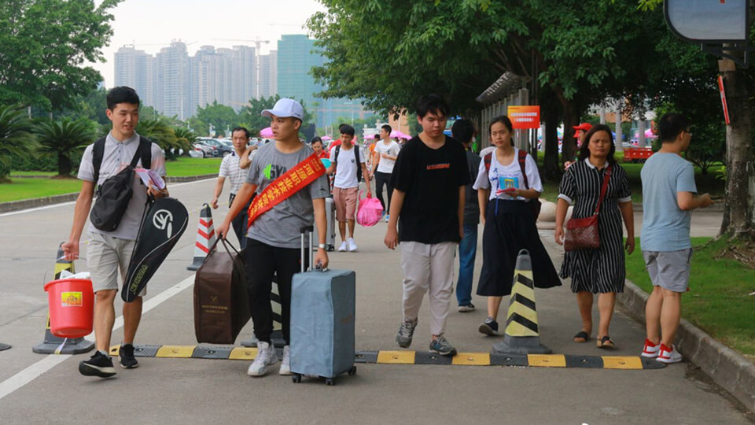

深圳市睿奕济慈善基金会介绍
深圳市睿奕济慈善基金会是成立于2015年12月30日的非公募基金会，业务主管单位为深圳市相关职能部门和单位。基金会成立以来，秉承“睿智深远，济世为怀”之公益慈善精神，支持公益事业，促进社会和谐与发展。主要业务范围为：推广普及公益慈善意识，弘扬公益慈善文化。接受社会各界的慈善捐赠。开展扶贫、救灾赈济、安老、扶孤、助残、助学、抚慰军属、生态环境保护等各类公益活动。积极助推教育、文化、卫生、体育与环境保护等社会公共服务设施建设。在本业务领域内，加强同国内外公益慈善组织的交流与合作。
